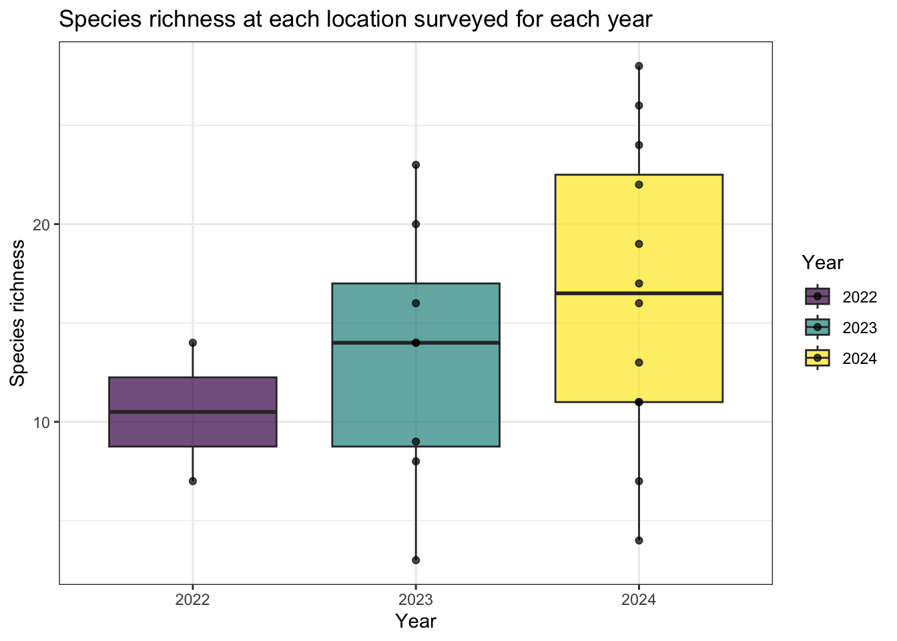
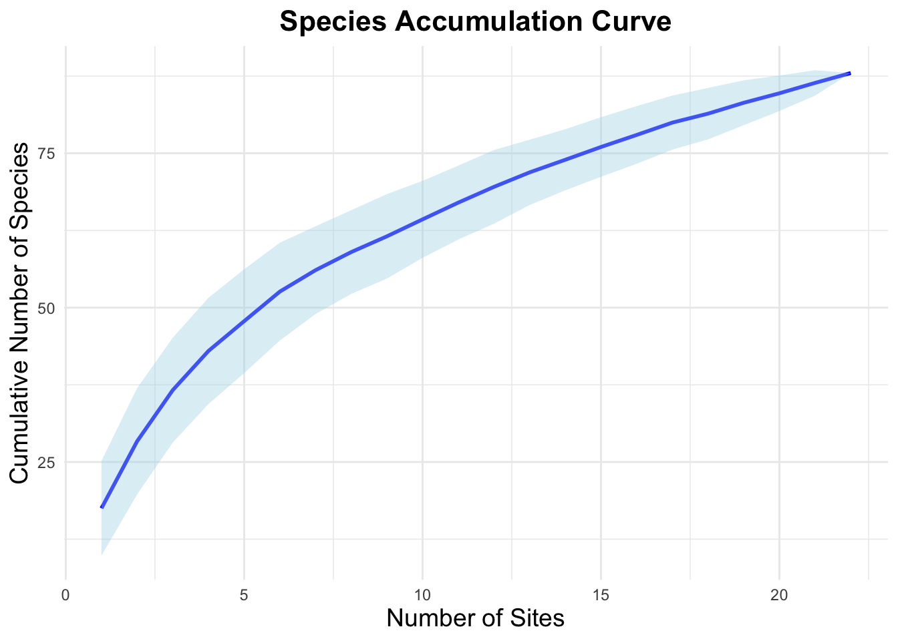

Report on the use of passive acoustic monitoring for the North Slave Métis Alliance

Abstract
Land Acknowledgement
We acknowledge the traditional lands and territories of the North Slave Métis Alliance (NSMA), whose members trace their origins to the early unions of French fur-traders and Indigenous women of the Great Slave Lake region. The Métis of this area have long existed as a distinct and vibrant community, exercising their harvesting rights across the Northwest Territories and beyond. We honor their continued stewardship of these lands and their rights recognized under section 35(1) of the Constitution Act, 1982.
Introduction
Human activities have been identified as key pressures and contributors to the global decline in forest wildlife (Allan et al. (2017)). The repercussions of habitat fragmentation (Fahrig (2003)) and loss (Hanski (2011)), climate change (Mantyka-pringle, Martin, and Rhodes (2012), Sattar et al. (2021), Abrahms et al. (2023)), and increased access to sensitive areas exert direct and indirect pressures on forest biodiversity, particularly in managed regions in Canada (Lemieux et al. (2011)). Climate change and increasing wildfire activity in the western and northern boreal have significantly impacted. Wildfire severity, intensified by climate change, significantly influences avian communities in northern boreal regions, with increasing severity favouring generalist and fire-specialist species while reducing species richness and functional diversity in sensitive habitats such as peatlands (Knaggs et al. (2020)). Furthermore, efforts to use umbrella species, like woodland caribou, for boreal landbird conservation highlights the need for complementary conservation measures (Micheletti et al. (2023)) that work in tandem.
In 2023, the North Slave Métis Alliance initiated a program incorporating autonomous recording units (ARUs) for passive acoustic monitoring of the vocalizing wildlife. ARUs are compact environmental sensors that are designed to passively record the environment (Shonfield and Bayne (2017)), capturing vocalizing species like birds and amphibians, which is growing in use across the globe (Sugai et al. (2018)). This technology enables resource managers to conduct prolonged surveys with minimal human interference. The subsequent data collected by these units contribute valuable information to metrics that can be used to study species trends over time, whereby this data aids decision-making and management within the region. Given the rapid and ease of accumulating data from these units, maintaining a high standard of data integrity is paramount to ensure future data interoperability and sharing. WildTrax is an online platform developed by the Alberta Biodiversity Monitoring Institute (ABMI) for users of environmental sensors to help addresses these big data challenges by providing solutions to standardize, harmonize, and share data.
The report summarizes the collected from the ARUs by the NSMA for 2023 and 2024. To enhance accessibility and reproducibility, the findings will be presented in this online report with fully documented code, allowing future updates as data collection methods become standardized. Additionally, recommendations will be developed to refine data transcription priorities, improve annual reporting methods, and evaluate recommendations for long-term monitoring. The objectives of this report are to:
- Document and standardize the data management and processing procedures for acoustic data collected from 2023 to 2024 to ensure consistency and reproducibility.
- Provide a comprehensive report detailing all detected species and the abundance of individuals within the surveyed area.
- Facilitate the publication of data, making it accessible to the community, public, resource managers, academic institutions, and other relevant agencies to promote transparency and collaboration.
- Use evaluation results to establish robust metrics that can inform long-term monitoring and conservation strategies.
Methods
Survey site selection was guided by the goal of capturing a representative sample of the region’s diverse habitats while considering logistical feasibility. The Taiga Shield Ecozone encompasses a heterogeneous landscape of upland forests, wetlands, peatlands, and freshwater systems. Sampling locations were strategically distributed to maximize coverage across these habitat types, enabling a comprehensive assessment of species diversity and abundance. Detailed coordinates and descriptions of the sampling locations are provided in Table Table 1. ARUs were deployed over three consecutive years (2022, 2023, and 2024); in 2022, two locations were surveyed at Old Fort Rae (62.65084, -115.8187; 62.64749, -115.8198). The survey expanded in 2023 to include eight locations spanning a larger geographic area, from Whatì (63.10753, -116.9763) to Tibbit Lake (62.5474, -113.3551). In 2024, four additional sites were added to the original eight, increasing the total to twelve locations and enhancing spatial coverage. ARUs were deployed at each site to continuously record the soundscape, allowing for the analysis of acoustic activity patterns and species presence across the study area.
Code
datatable(locs_summary,
options = list(
searching = TRUE,
paging = TRUE,
pageLength = 10
)) |>
formatStyle(columns = colnames(locs_summary),
backgroundColor = styleEqual(c("NA"), "lightgray")) Data management, processing and quality control
A total of 12456 recordings were collected (see ?@fig-recs-collect). Data were transferred via hard drive to the University of Alberta in Edmonton, where they are redundantly stored on a server known as Cirrus. The recordings were standardized to ensure adherence to the naming convention of LOCATION_DATETIME, such as PREDULE-LAKE-1_20230625_053500.wav. Recordings were also directly uploaded to WildTrax and can be downloaded from the platform’s Recording tab, accessible under Manage > Download list of recordings (see Figure 2).

The principal goal for data processing was to describe the acoustic community of species heard at locations while choosing a large enough subset of recordings for analyses. To ensure balanced replication, for each location and year surveyed, four randomly selected recordings were processed for 3-minutes between the hours of 3:00 AM - 7:59 AM ideally on four separate dates. Four recordings ensures that there is minimum number of samples for a simple occupancy analysis (Darryl I. MacKenzie et al. (2002) and Darryl I. MacKenzie et al. (2003)). Tags are made using count-removal (see Farnsworth et al. (2002), Sólymos et al. (2018)) where tags are only made at the time of first detection of each individual heard on the recordings. In case a species was overly abundant a TMTT (‘too many to tag’) flag was used (see Table 3). 0% of the total tags were TMTT but were subsequently converted to numeric using wildrtrax::wt_replace_tmtt. We also verified that all tags that were created were checked by a second observer (n = 1.29) to ensure accuracy of detections (see Table 2). Amphibian abundance was estimated at the time of first detection using the North American Amphibian Monitoring Program with abundance of species being estimated on the scale of “calling intensity index” (CI) of 1 - 3. Mammals such as Red Squirrel, were also noted on the recordings. After the data are processed in WildTrax, the wildrtrax package is use to download the data into a standard format prepared for analysis. The wt_download_report function downloads the data directly to a R framework for easy manipulation (see wildrtrax APIs).

| Tag is verified | Count | Proportion |
|---|---|---|
| FALSE | 761 | 61.42 |
| TRUE | 462 | 37.29 |
| NA | 16 | 1.29 |
| location | recording_date_time | species_code | individual_count |
|---|
Results

nsma_main <- nsma_main %>%
mutate(year = as.numeric(format(as.Date(recording_date_time), "%Y")))
# Create a species-by-site matrix for each year
species_matrix <- nsma_main %>%
group_by(year, location, species_code) %>%
summarise(individual_count = max(individual_order, na.rm = TRUE), .groups = "drop") %>%
pivot_wider(
names_from = species_code,
values_from = individual_count,
values_fill = 0
) %>%
select(-year, -location) %>%
as.matrix()Warning: There were 7 warnings in `summarise()`.
The first warning was:
ℹ In argument: `individual_count = max(individual_order, na.rm = TRUE)`.
ℹ In group 52: `year = 2023`, `location = "CAMERON-RIVER-1"`, `species_code =
"NONE"`.
Caused by warning in `max()`:
! no non-missing arguments to max; returning -Inf
ℹ Run `dplyr::last_dplyr_warnings()` to see the 6 remaining warnings.# Accumulation curve using vegan
spec_accum <- specaccum(species_matrix, method = "random")
sites <- spec_accum$sites
richness <- spec_accum$richness
sd <- spec_accum$sd
# Create a dataframe for plotting
accum_data <- data.frame(
Sites = sites,
Richness = richness,
SD = sd
)
# Calculate upper and lower bounds for richness
accum_data <- accum_data %>%
mutate(
Lower = Richness - SD,
Upper = Richness + SD
)
# Plot using ggplot2
ggplot(accum_data, aes(x = Sites, y = Richness)) +
geom_line(color = "blue", size = 1) +
geom_ribbon(aes(ymin = Lower, ymax = Upper), fill = "lightblue", alpha = 0.4) +
labs(
title = "Species Accumulation Curve",
x = "Number of Sites",
y = "Cumulative Number of Species"
) +
theme_minimal() +
theme(
plot.title = element_text(size = 16, face = "bold", hjust = 0.5),
axis.title = element_text(size = 14)
)Warning: Using `size` aesthetic for lines was deprecated in ggplot2 3.4.0.
ℹ Please use `linewidth` instead.
Discussion
Abrahms, Briana, Neil H Carter, TJ Clark-Wolf, Kaitlyn M Gaynor, Erik Johansson, Alex McInturff, Anna C Nisi, Kasim Rafiq, and Leigh West. 2023. “Climate Change as a Global Amplifier of Human–Wildlife Conflict.” Nature Climate Change 13 (3): 224–34.
Ackleh, Azmy S, Jacoby Carter, Lauren Cole, Tom Nguyen, Jay Monte, and Claire Pettit. 2010. “Measuring and Modeling the Seasonal Changes of an Urban Green Treefrog (Hyla Cinerea) Population.” Ecological Modelling 221 (2): 281–89.
Allan, James R, Oscar Venter, Sean Maxwell, Bastian Bertzky, Kendall Jones, Yichuan Shi, and James EM Watson. 2017. “Recent Increases in Human Pressure and Forest Loss Threaten Many Natural World Heritage Sites.” Biological Conservation 206: 47–55.
Cameron, J., A. Crosby, C. Paszkowski, and E. Bayne. 2020. “Visual Spectrogram Scanning Paired with an Observation–Confirmation Occupancy Model Improves the Efficiency and Accuracy of Bioacoustic Anuran Data.” Canadian Journal of Zoology 98 (11): 733–42. https://doi.org/10.1139/cjz-2020-0103.
Devarajan, Kadambari, Toni Lyn Morelli, and Simone Tenan. 2020. “Multi-Species Occupancy Models: Review, Roadmap, and Recommendations.” Ecography 43 (11): 1612–24.
Fahrig, Lenore. 2003. “Effects of Habitat Fragmentation on Biodiversity.” Annual Review of Ecology, Evolution, and Systematics 34 (1): 487–515.
Farnsworth, George L, Kenneth H Pollock, James D Nichols, Theodore R Simons, James E Hines, and John R Sauer. 2002. “A Removal Model for Estimating Detection Probabilities from Point-Count Surveys.” The Auk 119 (2): 414–25.
Gahbauer, Marcel A, Scott R Parker, Joanna X Wu, Cavan Harpur, Brooke L Bateman, Darroch M Whitaker, Douglas P Tate, Lotem Taylor, and Denis Lepage. 2022. “Projected Changes in Bird Assemblages Due to Climate Change in a Canadian System of Protected Areas.” Plos One 17 (1): e0262116.
Garland, Laura, Andrew Crosby, Richard Hedley, Stan Boutin, and Erin Bayne. 2020. “Acoustic Vs. Photographic Monitoring of Gray Wolves (Canis lupus): A Methodological Comparison of Two Passive Monitoring Techniques.” Canadian Journal of Zoology 98 (3): 219–28. https://doi.org/10.1139/cjz-2019-0081.
Handel, C. M., and M. N. Cady. 2004. “Alaska Landbird Monitoring Survey: Protocol for Setting up and Conducting Point Count Surveys.” Technical Report 2004-3. Alaska Science Center: U.S. Geological Survey.
Hanski, Ilkka. 2011. “Habitat Loss, the Dynamics of Biodiversity, and a Perspective on Conservation.” Ambio 40 (3): 248–55.
Knaggs, Michelle, Samuel Haché, Scott E Nielsen, Rhiannon F Pankratz, and Erin Bayne. 2020. “Avian Response to Wildfire Severity in a Northern Boreal Region.” Forests 11 (12): 1330.
Knight, Elly C, and Erin M Bayne. 2019. “Classification Threshold and Training Data Affect the Quality and Utility of Focal Species Data Processed with Automated Audio-Recognition Software.” Bioacoustics 28 (6): 539–54.
Lemieux, Christopher J, Thomas J Beechey, Daniel J Scott, and Paul A Gray. 2011. “The State of Climate Change Adaptation in Canada’s Protected Areas Sector.” The Canadian Geographer/Le Géographe Canadien 55 (3): 301–17.
Loeb, Susan C., Thomas J. Rodhouse, Laura E. Ellison, Cori L. Lausen, Jonathan D. Reichard, Kathryn M. Irvine, Thomas E. Ingersoll, et al. 2015. A Plan for the North American Bat Monitoring Program (NABat). U.S. Department of Agriculture, Forest Service, Southern Research Station. https://doi.org/10.2737/srs-gtr-208.
Loeb, Susan C., Thomas J. Rodhouse, Lee E. Ellison, et al. 2015. A Plan for the North American Bat Monitoring Program (NABat). Asheville, NC: U.S. Department of Agriculture, Forest Service, Southern Research Station. https://doi.org/10.1898/NWN21-10.
Lovett, Gary M. 2013. “When Do Peepers Peep? Climate and the Date of First Calling in the Spring Peeper (Pseudacris Crucifer) in Southeastern New York State.” Northeastern Naturalist 20 (2): 333–40.
MacKenzie, Darryl I., and Larissa L. Bailey. 2004. “Assessing the Fit of Site-Occupancy Models.” Journal of Agricultural, Biological, and Environmental Statistics 9 (3): 300–318. http://www.jstor.org/stable/1400484.
MacKenzie, Darryl I., James D. Nichols, James E. Hines, Melinda G. Knutson, and Alan B. Franklin. 2003. “ESTIMATING SITE OCCUPANCY, COLONIZATION, AND LOCAL EXTINCTION WHEN a SPECIES IS DETECTED IMPERFECTLY.” Ecology 84 (8): 2200–2207. https://doi.org/https://doi.org/10.1890/02-3090.
MacKenzie, Darryl I, James D Nichols, Gideon B Lachman, Sam Droege, J Andrew Royle, and Catherine A Langtimm. 2002. “Estimating Site Occupancy Rates When Detection Probabilities Are Less Than One.” Ecology 83 (8): 2248–55.
MacKenzie, Darryl I, James D Nichols, Mark E Seamans, and RJ Gutiérrez. 2009. “Modeling Species Occurrence Dynamics with Multiple States and Imperfect Detection.” Ecology 90 (3): 823–35.
Mantyka-pringle, Chrystal S, Tara G Martin, and Jonathan R Rhodes. 2012. “Interactions Between Climate and Habitat Loss Effects on Biodiversity: A Systematic Review and Meta-Analysis.” Global Change Biology 18 (4): 1239–52.
Micheletti, Tatiane, Samuel Haché, Diana Stralberg, Frances EC Stewart, Alex M Chubaty, Ceres Barros, Erin M Bayne, et al. 2023. “Will This Umbrella Leak? A Caribou Umbrella Index for Boreal Landbird Conservation.” Conservation Science and Practice 5 (4): e12908.
Oksanen, Jari, Frank G Blanchet, Roeland Kindt, Pierre Legendre, Peter R Minchin, Robert B O’Hara, Gavin L Simpson, et al. 2010. “Canonical Analysis of Principal Coordinates: A Useful Method of Constrained Ordination for Ecology.” Ecology 92 (3): 597–611. https://doi.org/10.1890/10-0340.1.
Petrikeev, Michael. 2019. “Forest Breeding Bird Abundance and Composition, Kluane National Park Reserve.”
Reichert, B., C. Lausen, S. Loeb, et al. 2018. A Guide to Processing Bat Acoustic Data for the North American Bat Monitoring Program (NABat). U.S. Geological Survey. https://doi.org/10.1898/NWN21-10.
Reichert, Brian, Cori Lausen, Susan Loeb, Ted Weller, Ryan Allen, Eric Britzke, Tara Hohoff, et al. 2018. “A Guide to Processing Bat Acoustic Data for the North American Bat Monitoring Program (NABat).” US Geological Survey.
Sattar, Q, ME Maqbool, R Ehsan, S Akhtar, Q Sattar, ME Maqbool, R Ehsan, and S Akhtar. 2021. “Review on Climate Change and Its Effect on Wildlife and Ecosystem.” Open J Environ Biol 6 (1): 008–14.
Shannon, Claude Elwood. 1948. “A Mathematical Theory of Communication.” The Bell System Technical Journal 27 (3): 379–423.
Shonfield, Julia, and Erin M Bayne. 2017. “Autonomous Recording Units in Avian Ecological Research: Current Use and Future Applications.” Avian Conservation & Ecology 12 (1).
Shonfield, Julia, Sarah Heemskerk, and Erin M Bayne. 2018. “Utility of Automated Species Recognition for Acoustic Monitoring of Owls.” Journal of Raptor Research 52 (1): 42–55.
Slough, B., C. Lausen, B. Paterson, et al. 2022. “New Records about the Diversity, Distribution, and Seasonal Activity Patterns by Bats in Yukon and Northwestern British Columbia.” Northwest Naturalist 103: 162–82. https://doi.org/10.1898/NWN21-10.
Slough, Brian G, Donald G Reid, Dafna S Schultz, and Maria C-Y Leung. 2023. “Little Brown Bat Activity Patterns and Conservation Implications in Agricultural Landscapes in Boreal Yukon, Canada.” Ecosphere 14 (3): e4446.
Solick, Daniel I. 2022. “Bat Acoustic Species-Pair Matrix for Western u.s./Canada.” Colorado: Vesper Bat Detection Services.
Solick, Donald I, and Robert MR Barclay. 2022. “Coat Color of Western Long-Eared Bats (Myotis Evotis) Living in Different Environments: A Test of Gloger’s Rule.” Northwestern Naturalist 103 (2): 183–89.
Sólymos, Péter, Steven M. Matsuoka, Steven G. Cumming, Diana Stralberg, Patricia Fontaine, Fiona K. A. Schmiegelow, Samantha J. Song, and Erin M. Bayne. 2018. “Evaluating time-removal models for estimating availability of boreal birds during point count surveys: Sample size requirements and model complexity.” The Condor 120 (4): 765–86. https://doi.org/10.1650/CONDOR-18-32.1.
Sonobat. n.d. “Western North America Bat Acoustic Table.” https://sonobat.com/download/Western_NA_Bat_Acoustic_Table.pdf.
Sugai, Larissa Sayuri Moreira, Thiago Sanna Freire Silva, Jr Ribeiro José Wagner, and Diego Llusia. 2018. “Terrestrial Passive Acoustic Monitoring: Review and Perspectives.” BioScience 69 (1): 15–25. https://doi.org/10.1093/biosci/biy147.
Szewczak, Joe. 2018. “Acoustic Features of Western US Bats.” Arcata, California: Humboldt State University.
Turgeon, Patrick, Steven L. Van Wilgenburg, and Kiel L. Drake. 2017. “Microphone Variability and Degradation: Implications for Monitoring Programs Employing Autonomous Recording Units.” Avian Conservation and Ecology 12. https://api.semanticscholar.org/CorpusID:89959184.
Ware, Lena, C. Lisa Mahon, Logan McLeod, and Jean-François Jetté. 2023. “Artificial Intelligence (BirdNET) Supplements Manual Methods to Maximize Bird Species Richness from Acoustic Data Sets Generated from Regional Monitoring.” Canadian Journal of Zoology 101 (12): 1031–51. https://doi.org/10.1139/cjz-2023-0044.